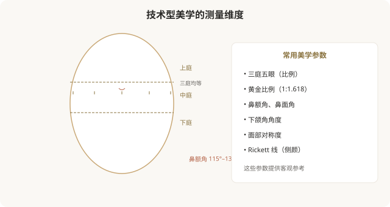
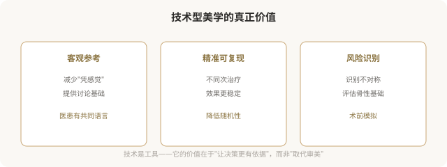
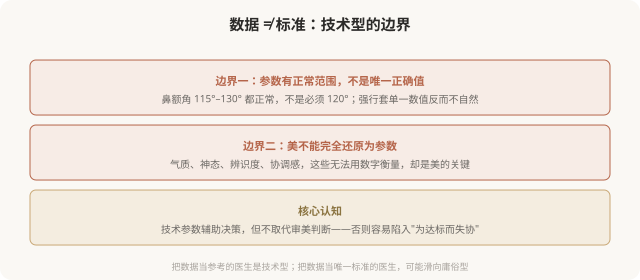
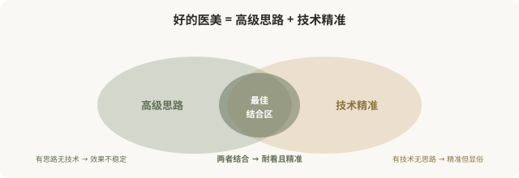

先说结论：技术型医美美学以测量学、比例分析、参数化设计为核心，把“美”分解为可量化的数据，黄金比例、面部夹角、三庭五眼、对称度等。它的价值在于提供客观参考、降低对“感觉”的依赖、让设计更精准可复现。但技术型也有边界：数据是参考不是标准，审美不能完全还原为参数。技术型是工具，高级型是境界，好的医美是“高级的思路 + 技术的精准”，而非技术取代审美。
技术型美学的核心，把美化成数据

技术型美学的几个常用工具：
- 比例分析：三庭五眼、黄金比例，评估五官关系。
- 角度测量：鼻额角、鼻面角、下颌角，评估轮廓。
- 对称度评估：左右脸对称性的量化。
- 侧颜线：Rickett 线等评估颏部与鼻唇的位置。
- 数字化设计：3D 成像、CT 三维重建，术前模拟。
技术型的价值

技术型的边界，数据不是标准
这是技术型美学最重要的边界认知：测量数据是参考，不是必须达到的标准。

一个关键区分：
- 技术型（好的）：用数据辅助判断，结合个体特征制定方案。
- 庸俗型（坏的）：把数据当唯一标准，强行把人脸“调整到标准值”，忽视个体差异。
后者是技术型的滥用，它表面上“科学”，实际上是用参数取代审美，结果往往是“标准但失协”“精准但显假”。
技术型与高级型的关系

高级型和技术型不是对立的，而是互补的。最高水平的医美，是“高级的整体思路”配上“技术的精准执行”，用克制、协调、个性化的设计，通过精确的数据分析和操作来实现。
技术型被滥用时的风险
当技术型被误用为“唯一标准”，会出现几个问题：
- 趋同化：所有人都被调到“标准参数”，结果千篇一律。
- 忽视气质：参数达标了，但气质、神态、辨识度被抹平。
- 过度治疗：为达到某个“标准值”，做不必要的项目。
- 抹杀个体特征：把本应保留的个人特征（如轻微不对称、独特鼻型）当成“缺陷”修正。
这就是技术型滑向庸俗型的路径，用“科学”包装趋同。
如何正确看待技术型
作为消费者，理解技术型美学的几个原则：
- 数据是参考不是标准：医生用参数辅助判断是好事，但不能把人脸简化为数字。
- 关注整体而非局部数值：与其问“我的鼻角是多少度”，不如问“我的整体协调吗”。
- 警惕“科学”包装：有些机构用“AI 测量”“黄金比例”等话术营销，实际仍是套模板。
- 尊重个体差异：你的“非标准”特征，可能是你的辨识度，不必“修正”。
- 技术 + 思路：选医生时，看他是否既用技术工具，又有整体审美思路。
一个反思
技术型医美美学是现代医美的重要进步，它让设计更精准、沟通更有依据、效果更可复现。但技术的价值在于辅助审美，而非取代审美。当数据成为唯一标准，当参数取代了协调与气质，技术型就滑向了庸俗型，用“科学”的名义批量生产趋同的脸。真正高级的医美，是把技术作为实现审美思路的工具，而非让审美屈从于数据。数据是仆人，不是主人。
本文用于健康教育与审美思辨，客观介绍技术型、警示其滥用；具体医美决策须结合个体情况与具备资质的医师面诊。